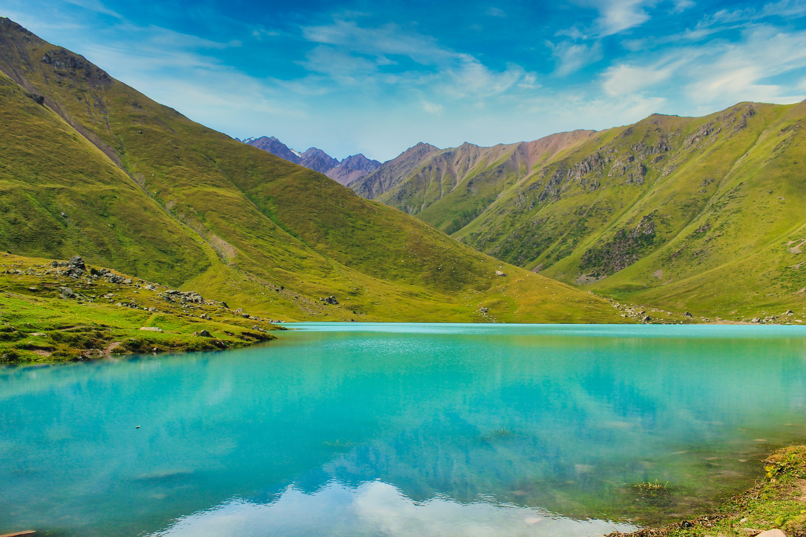
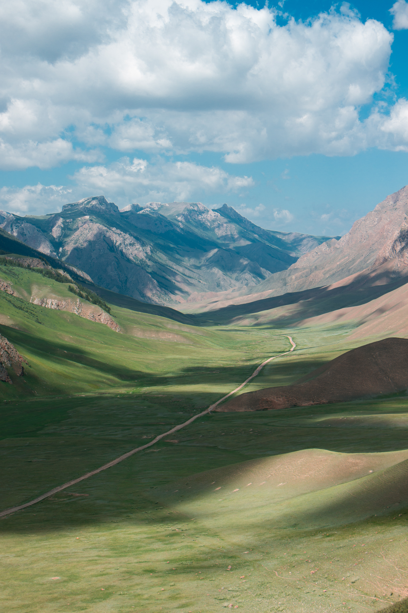
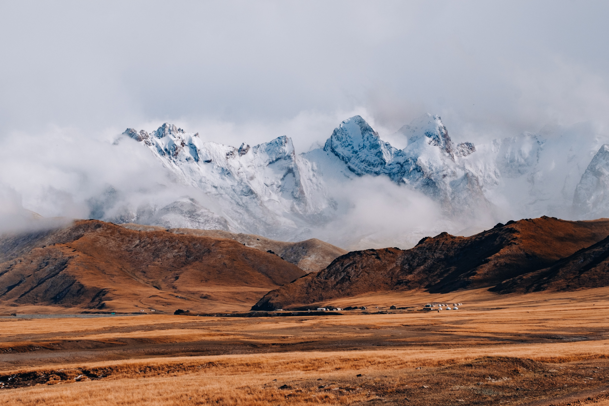
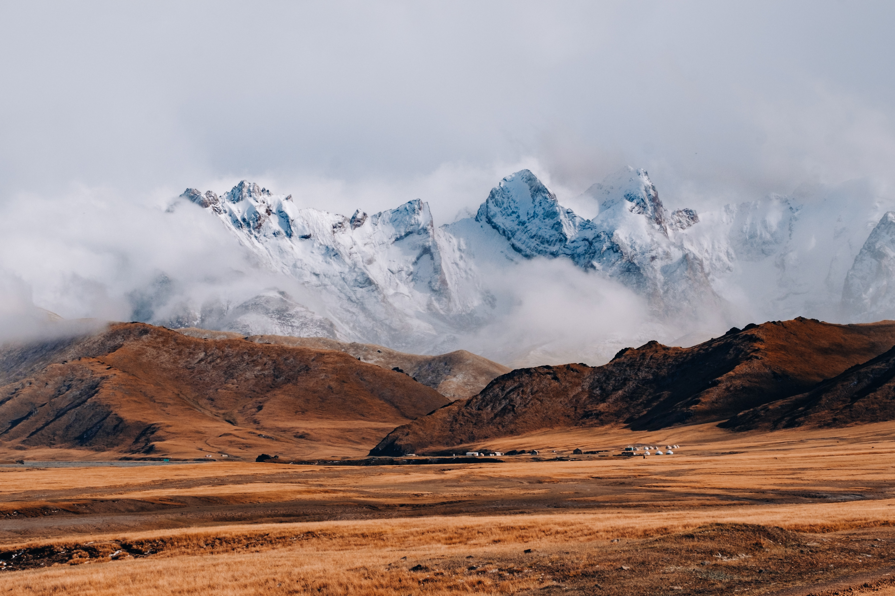

Le Kirghizistan, situé en Asie centrale, est un pays montagneux d'une beauté saisissante, souvent surnommé le "joyau caché" de la région. Il est renommé pour ses paysages spectaculaires, avec des sommets enneigés, des lacs d'un bleu cristallin, et des vallées verdoyantes. La capitale, Bichkek, allie modernité et héritage soviétique, offrant un aperçu de la culture et de l'histoire kirghizes. La population est majoritairement d'origine kirghize, une ethnie turcophone, et le pays est fier de ses traditions nomades, avec une histoire riche en élevage de chevaux et en yourtes. Les voyageurs peuvent explorer le mode de vie nomade, déguster des plats traditionnels comme le beshbarmak, et partir à l'aventure dans les montagnes du Tian Shan pour découvrir des trésors naturels comme le lac Issyk-Koul. Le Kirghizistan est une destination unique, offrant une expérience culturelle et naturelle inoubliable.
  
